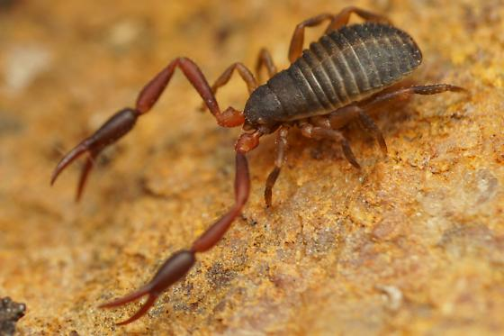

PseudoscorpionesIdentificação
O pseudoescorpião é um pequeno aracnídeo que apresenta pinças semelhantes às dos escorpiões, porém não possui cauda articulada nem ferrão, características típicas dos escorpiões verdadeiros.
Peçonhento?
Não apresenta importância médica para os seres humanos e é considerado inofensivo.
Importância ecológica
Atua no controle de pequenos insetos, ácaros e outros invertebrados, contribuindo para o equilíbrio ecológico do ambiente.
Apesar de se parecer com um escorpião, trata-se de um organismo benéfico ao ambiente e não deve ser eliminado.